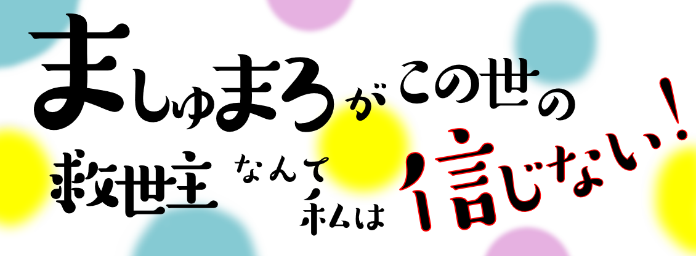

ましゅ信！公式サイト
アニメ ましゅまろがこの世の救世主なんて私は信じない！ 公式サイトへようこそ！最新のアニメ情報などをお届けします
作品紹介

あらすじ
～高校生の山田さくらは突然異世界のアルティア国に飛ばされる。 ～
キャスト

山田さくら

サロ・レイス
スタッフ
原作
YUYU
原作イラスト
YUYU
総監督
YUKINA
監督
あおば
脚本
YUKINA
キャラクターデザイン
YUYU ゆうり
アニメーション制作
YUKINA FAN CLUB【PRIVATE】
お問い合わせ
ましゅまろがこの世の救世主なんて私は信じない！お問い合わせフォームです。皆様からのご質問やお問い合わせにお答えするためのものでございます。何かお困りのことや疑問点、ご要望などございましたら、お気軽にお知らせくださいませ。
お問い合わせをする
寄付
ましゅまろがこの世の救世主なんて私は信じない！公式サイトへの寄付をお考えいただき、ありがとうございます。私たちの制作活動やアニメの継続的な提供を支援していただける方は、以下のリンクから寄付をお願いします。
寄付する
各SNS
公式ライン
公式ラインでは、最新の情報やお知らせを配信します。

Twitterではアニメのお知らせやどうでもいいことをツイートします。
ましゅ信！公式Twitterです！フォローよろしくお願いします！
— ましゅ信！【公式】 (@Shushan_) June 30, 2023
YouTube
YouTubeではましゅ信の重大な情報を公開します！
ましゅ信！小説
8/31日まで無料公開中！最新ニュース
2023年 7/1
ましゅ信公式サイト更新!2023年 6/30
ましゅ信公式Twitterロックされ記念日！2023年 6/29
ましゅ信公式Twitter開設！2023年 6/28
ましゅ信公式YouTubeチャンネル開設！2023年 6/27
ましゅ信のアニメ制作決定！2023年 6/4
ましゅ信の公式サイト開設！